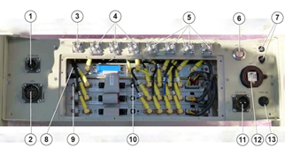
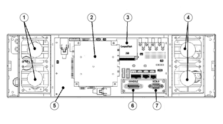

The ASU and the GPS antenna are connected to a Receiver.
The „Skylark 7050C" from GEW Technologies provides:
- Frequency range 1 to 3600 MHz
- 20 MHz instantaneous bandwidth
The system is equipped with:
- 1 Data acquisition board (DAQ)
- 3 Receiver boards (RFX)
Figure 1. RDF
Assembly - Receiver DF Front Panel

- 1
- Compass interface
- 2
- Antenna Switching Unit interface
- 3
- GPS antenna input
- 4
- HF signal inputs
- 5
- V/UHF signal inputs
- 6
- System power switch
- 7
- System status indicators
- 8
- 7050DAQ module
- 9
- RFX7050 modules
- 10
- Channel selection
- 11
- System power feed
- 12
- Gigabit LAN
- 13
- Fuse (T3 15A/250V AC)
Figure 2. RDF
Assembly - Receiver DF Rear Panel

- 1
- System fans
- 2
- SBC (PC104+)
- 3
- Compact flash
- 4
- System fans (no air filters)
- 5
- MRD7050BP module
- 6
- Console interface
- 7
- Debug interface